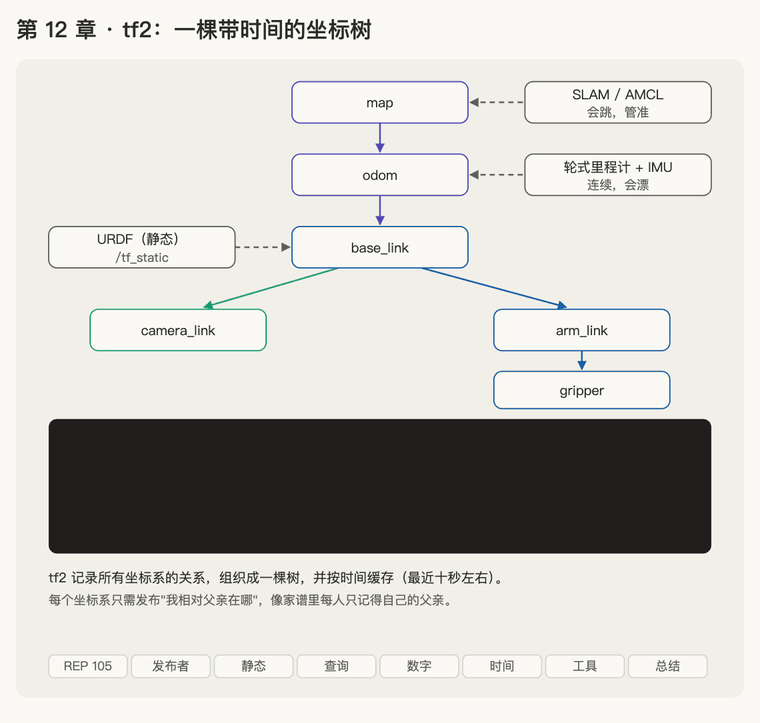
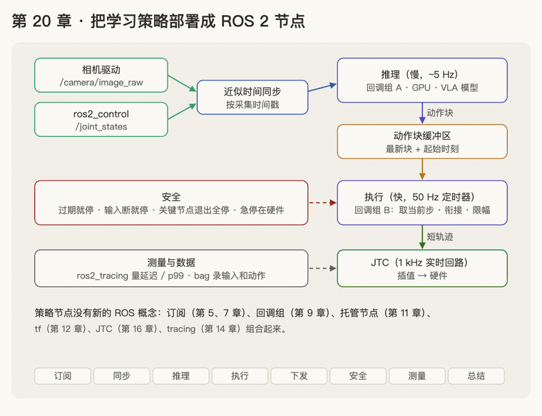

从零学 ROS 2 · 讲义目录
20 章 · 21 个动画（GIF + 可交互页面）· 47 张复习卡片 · 覆盖 study-plan 阶段 A–I：从 turtlesim 命令行到把学习策略部署成 ROS 2 节点；目标发行版 Lyrical Luth（2026-05 LTS）
这本书讲什么
从"ROS 不是操作系统，是机器人各部分之间的管道"讲起，先用 turtlesim 和 ros2 命令行看清节点、话题、服务、参数、动作，再自己写包和 Python 节点；接着拆开通信机制（QoS、发现与中间件、executor、零拷贝、时间与托管节点），然后是机器人本体（tf2 坐标树、URDF、launch / 测试 / 调试）、控制与应用栈（ros2_control、Nav2、MoveIt 2），最后讲仿真与部署，把一个 VLA（Vision-Language-Action：视觉 / 语言 / 动作）策略包成节点接到真机上。
- 适合谁：会写 Python、想把学到的机器人学习模型接到真机器人上的人。不需要先会 C++ 或 Linux 系统编程；用到的坐标变换、四元数、实时调度在用到的那一章现场补。
- 读完能做什么：看懂一个 ROS 2 系统的计算图和 launch 文件，自己写节点、接口和托管节点，选对 QoS 和 executor，配好 tf2 / URDF / ros2_control；按 study-plan 做完里程碑 R-M0–R-M10，最后一个就是"学习策略作为 ROS 2 节点跑 50 Hz 闭环"。
- 怎么读：按章顺序读。每章先看讲解和动画，再自己做练习，最后用复习卡片隔几天考自己。
讲解的特点
- 一次一小步：每个概念按"白话类比 → 命令 / 代码 / 规则（每个名字说清楚是什么）→ 小例子亲手走一遍"讲，比如 QoS 用寄快递、executor 用餐厅服务员、tf2 用家谱。
- 每章一个动画：关键原理做成可交互页面，▶ 播放、→ 单步、↺ 从头开始；GIF 版直接嵌在正文里。
- 对照原文：每章开头"对应原文"一行、正文里的"依据："和附录的推荐阅读，都指向本地
ros2/materials/里的官方文档、设计文章和生态文档（ros2_control、Nav2、MoveIt 2、rmw_zenoh），有把握的标了行号（如 About-Domain-ID.rst L92–L110）。 - 保留真实的学习过程：练习与作答记录里写学习时的原话、对错和点评；答错、卡住的地方变成复习卡片。
- 术语不设门槛：缩写第一次出现就给英文全称并逐词解释（如 QoS = Quality of Service：服务 / 质量），全书缩写见 缩写与术语表。
- 每章都有代码对照：附录最后一节把本章的规则和数字用纯 Python 模拟一遍（本机 macOS 没有 rclpy，原因见第 1 章），配测试核对和讲义一致，顺带讲代码里才看得到的坑（列表是引用、浮点换算步数要加 1e-9、四元数用半角……）；只算讲过的例子，不提前给练习答案。每章还配了一个 Jupyter notebook（
ros2/solutions/chapter-code/notebooks/），讲解和代码放在一起，一格一格边读边跑。 - 每章收尾有口诀：几句话记住一章，全部口诀汇总在本页末尾。
示例动画
 第 1 章 · 一条消息走一趟 发现、匹配、变字节、排队，spin 才叫醒回调 讲义 · ▶ 交互 |
 第 7 章 · QoS 匹配 订阅者要求不高于发布者提供，才连得上 讲义 · ▶ 交互 |
 第 9 章 · executor 时间线 一个慢回调拖垮控制回路，分组分线程救回来 讲义 · ▶ 交互 |
 第 12 章 · tf2 变换树 map → odom → base_link，先转后移、沿树相乘 讲义 · ▶ 交互 |
 第 15 章 · ros2_control 一拍三步 read → update → write，接口就是共享变量 讲义 · ▶ 交互 |
 第 20 章 · 学习策略节点 同步输入、快慢分离、动作块衔接、安全兜底 讲义 · ▶ 交互 |
全部动画见 动画目录（本地看交互版要起服务，见那里的说明）。
其他入口
- 复习卡片：../review.md（R01–R47，按间隔规则复习）
- 学习计划与里程碑：../study-plan.md（阶段 A–I，R-M0–R-M10）
- 材料清单：../../materials/SOURCES.md（官方文档、设计文章、生态文档都是纯文本，直接读）
- 代码对照与 notebook：
ros2/solutions/chapter-code/（README） - 缩写与术语表：appendix-glossary.md
全流程总览
目标：把一个学习策略（比如 VLA 模型）接到真机器人上，50 Hz 平滑地发关节命令，出问题能安全停下。
看懂一个系统：节点 + 话题 / 服务 / 动作 / 参数；ros2 命令行 第 1–2 章
│ 一条命令全启动、看日志、录数据重放 第 3 章
▼
自己写：工作区 → 包 → Python 节点 → 自定义接口与动作 第 4–6 章
│
▼
通信机制：QoS → 发现与中间件 → executor 与回调组 第 7–9 章
→ 组件与零拷贝 → 仿真时间与托管节点 第 10–11 章
│
▼
机器人本体：tf2 坐标树 → URDF / RViz → launch、测试、调试 第 12–14 章
│
▼
控制与应用栈：ros2_control 实时回路 → 硬件组件与控制器 第 15–16 章
→ Nav2 导航 → MoveIt 2 机械臂规划 第 17–18 章
│
▼
上真机：仿真与部署 → 学习策略节点（R-M10） 第 19–20 章
| 步 | 做什么 | 为什么这样做 |
|---|---|---|
| 看懂系统 | 用命令行看节点和四种通信 | 出问题时第一件事就是 node list、topic info |
| 启动与录像 | launch 一键启动，bag 录下来重放 | 几十个节点不能一个个开；现场的问题要带回桌前复现 |
| 自己写 | 包、节点、接口、动作 | 策略节点就是一个订阅图像、发布动作的节点 |
| QoS | 按数据性质选可靠性、持久性 | 相机要最新、指令不能丢、地图要给晚来的人 |
| 发现与中间件 | 域号分组、选 DDS 或 Zenoh | 同一网络不串台；Wi-Fi、容器、跨机更稳 |
| executor | 回调分组、分线程 | 慢的推理不能挤掉快的控制 |
| 零拷贝与托管节点 | 组件、进程内通信；configure / activate | 大图像少复制；先准备好再开工，出错能退回 |
| tf2 与 URDF | 坐标树、机器人模型、正运动学 | 相机看到的、模型输出的、控制器执行的要在同一坐标系 |
| ros2_control | read → update → write，硬件组件与控制器 | 1 kHz 关节回路要准时，不能走普通话题 |
| Nav2 / MoveIt 2 | 导航栈、运动规划 | 现成的规划与避障，学习模型只替换其中一环 |
| 仿真与部署 | 换插件切真机，Docker 打包，调网络 | 上层一行不改；现场 Wi-Fi 大消息会卡 30 秒 |
| 策略节点 | 同步、快慢分离、衔接、限幅、测 p99 | 推理几百毫秒一次，执行要 50 Hz 平滑且安全 |
目录
每章都配一个动画：GIF 在讲义正文里直接播放，▶ 交互是可以点按钮单步的页面。
| 章 | 主题 | 一句话精要 | 动画 | 卡片 | 状态 |
|---|---|---|---|---|---|
| 1 | ROS 2 是什么：架构、消息流程、四种说话方式、为什么有 ROS 2 | 节点写在上，中间件能换插头；spin 才叫醒回调 | GIF · ▶ 交互；GIF · ▶ 交互 | R01–R05 | 正文完成，练习 1-3、1-4 可选待做 |
| 2 | 用命令行看懂 turtlesim | ros2 <对象> <动作>：先 list、再 show、再 pub / call / set |
GIF · ▶ 交互 | R06–R09 | 正文完成，练习待做 |
| 3 | 日志、launch 和 bag | 日志五级三去处；一张清单起全家；录的是字节 | GIF · ▶ 交互 | R10–R12 | 正文完成，练习待做 |
| 4 | 工作区、colcon 和第一个包 | 先 source 底层再 source 上层；colcon 按依赖排顺序 | GIF · ▶ 交互 | R13–R14 | 正文完成，练习待做 |
| 5 | 用 Python 写节点：发布、订阅、服务、参数 | 一个节点 = 一堆回调 + 一个 spin；回调里别同步 call | GIF · ▶ 交互 | R15–R17 | 正文完成，练习待做 |
| 6 | 自定义接口与动作 | 接口包只能 ament_cmake；动作 = 三服务两话题 | GIF · ▶ 交互 | R18–R19 | 正文完成，练习待做 |
| 7 | QoS：通信质量设置 | 要求不高于提供才成交；不成交不报错，只是收不到 | GIF · ▶ 交互 | R20–R21 | 正文完成，练习待做 |
| 8 | 中间件、发现与网络 | 同号同频道；一个环境变量换中间件；Zenoh 先起路由器 | GIF · ▶ 交互 | R22–R23 | 正文完成，练习待做 |
| 9 | Executor 与回调组 | 默认组是互斥组；多线程不分组还是串行 | GIF · ▶ 交互 | R24–R25 | 正文完成，练习待做 |
| 10 | 组合、进程内通信与零拷贝 | 组件进容器；unique_ptr 一交，零拷贝 | GIF · ▶ 交互 | R26–R27 | 正文完成，练习待做 |
| 11 | 时间与托管节点 | 全体 use_sim_time；configure 准备，activate 开工 | GIF · ▶ 交互 | R28–R29 | 正文完成，练习待做 |
| 12 | tf2：坐标变换树 | 每个坐标系一个爹；先转后移；目标在前、源在后 | GIF · ▶ 交互 | R30–R31 | 正文完成，练习待做 |
| 13 | URDF、xacro、robot_state_publisher 与 RViz | URDF + 关节角 → 正运动学 → tf → RViz | GIF · ▶ 交互 | R32–R33 | 正文完成，练习待做 |
| 14 | launch 进阶、测试与调试 | launch 是描述不是脚本；关键进程退出就全停 | GIF · ▶ 交互 | R34–R35 | 正文完成，练习待做 |
| 15 | 实时与 ros2_control 架构 | 实时 = 准时；一拍三步 read → update → write | GIF · ▶ 交互 | R36–R37 | 正文完成，练习待做 |
| 16 | 硬件组件与控制器 | configure 通信、activate 上电；JTC 按时间插值 | GIF · ▶ 交互 | R38–R39 | 正文完成，练习待做 |
| 17 | Nav2：移动机器人导航栈 | 五个服务器 + 两张代价地图 + 一棵行为树 | GIF · ▶ 交互 | R40–R41 | 正文完成，练习待做 |
| 18 | MoveIt 2：机械臂运动规划 | 路径没时间，轨迹有时间；执行交给 JTC | GIF · ▶ 交互 | R42–R43 | 正文完成，练习待做 |
| 19 | 仿真与部署 | 上层不动，只换一层；大消息 + Wi-Fi 会卡 30 秒 | GIF · ▶ 交互 | R44–R45 | 正文完成，练习待做 |
| 20 | 收尾：把学习策略部署成 ROS 2 节点 | 推理慢、执行快，分组分线程；块间平滑、过期就停 | GIF · ▶ 交互 | R46–R47 | 正文完成，练习待做 |


附录：缩写与术语表。
建议顺序：第 1–6 章（会用、会写）→ 装好环境做 R-M0–R-M2 → 第 7–11 章（通信机制）→ 第 12–14 章（坐标、模型、工程化）→ 第 15–20 章（控制与应用栈）。
后续大纲
20 章正文都写完了（2026-11-13）。接下来不再加章，而是：
| 做什么 | 对应 | 说明 |
|---|---|---|
| 逐章做练习，答错的补进复习卡片 | 每章"练习与作答记录" | 作答后在讲义里记原话和点评 |
| 装好 Linux 环境（Docker 或 UTM 虚拟机） | R-M0 | macOS 只能源码编译 ROS 2，二进制包要 Ubuntu 26.04 |
| 按 study-plan 做动手里程碑 | R-M1–R-M10 | 代码放 ros2/solutions/ros2_ws/；每做完一个，在对应章节的代码对照里补一段真 rclpy 写法 |
口诀汇总
- 架构：节点写在上，rclpy 来调；rcl 往下是内部，中间件能换插头。
- 流程：先发现、再匹配；往下变字节，往上变对象；队列里等着，spin 才叫醒回调。
- 四种说话：流水用话题，问答用服务，长活用动作，设置用参数。
- 为什么 ROS 2：小饭馆开连锁：去掉领班（master），借用 DDS，加上 QoS。
- 套路：
ros2 <对象> <动作>；对象是 node / topic / service / param / action / interface。 - 先看后用：
list -t看有什么，interface show看长什么样，再pub/call/set/send_goal。 - 话题三查：
echo看内容，info看谁连着，hz看频率够不够。 - 参数三件套：
get / set现场改，dump存 YAML，--params-file启动时载入。 - 动作三结局：成功、客户端取消（cancel）、服务端放弃（abort）。
第 3 章 · 日志、launch 和 bag：一次启动、看清日志、录下来重放
- 日志：五级（调试、信息、警告、错误、致命），三去处（终端、文件、
/rosout）；高频回调要节流。 - launch：一张清单起全家；命名空间分你我。
- bag：record 录、info 看、play 放；录的是字节，存的是 MCAP；回放时关掉原来的发布者。
- 工作区：源码进 src，产物三兄弟（build、install、log）。
- 叠层：先 source 底层，再 source 上层；同名上层优先；新终端里 source。
- 包：
package.xml是身份证，依赖写全；Python 入口写进setup.py。 - 构建：rosdep 装依赖，colcon 排顺序；Python 用
--symlink-install，改了不用重编。
第 5 章 · 用 Python 写节点：发布、订阅、服务、参数
- 骨架：继承 Node 起个名，init、spin 加 Ctrl+C。
- 四件套：
create_publisher / create_subscription / create_timer / create_service，对象都挂在self上。 - 服务：服务端填 response 返回；客户端
call_async拿凭条，回调里别用同步call()。 - 参数：先声明再用；校验在 on-set（无副作用），收尾在 post-set。
- 写接口：一行"类型 名字"；
[]不限长、[N]定长、[<=N]有上限；默认值放第三项，常量全大写用等号。 - 接口包：只能 ament_cmake；CMake 里
rosidl_generate_interfaces，package.xml三行（生成器、运行时、组成员）。 - 动作：三服务（发目标、取消、取结果）两话题（反馈、状态）；三中间态三终态。
- 标准优先：能用
geometry_msgs/sensor_msgs就别自定义。
- 七策略：历史、深度、可靠、持久，截止、寿命、活性。
- 匹配：订阅者要求，发布者提供；要求不高于提供才成交，不成交不报错、只是收不到。
- 常用搭配：传感器尽力而为（Best effort）；指令可靠（Reliable）；地图、静态信息两边都 Transient local。
- 排查：收不到消息，先
topic info -v看 QoS。
- 分组：同号同频道，默认是 0；安全取 0 到 101。
- 范围：LOCALHOST 只看本机，STATIC_PEERS 点名找人。
- 中间件：一个环境变量换插头，全系统用同一个；Zenoh 先起路由器。
- 排错：域号、中间件、范围、ping、组播、QoS；缓存不对 daemon stop。
第 9 章 · Executor 与回调组：谁在什么时候、哪个线程里跑你的回调
- spin：spin 就是单线程 executor；消息留在中间件，等回调来取。
- 调度：快时先来后到，慢时轮转；一个慢回调拖累全节点。
- 回调组：互斥组一个一个来，可重入组随便并行；不同组总能并行；默认组是互斥组。
- 多线程不分组 = 还是串行；同步等待和被等待的回调放不同组。
- 组件：没有 main 的节点，编成动态库，进容器加载；进程怎么分，部署时再定。
- 进程内：开
use_intra_process_comms，unique_ptr一交，零拷贝。 - 跨进程：借中间件的共享内存（loaned messages），要定长类型、要中间件支持。
- GPU：Lyrical 的
rosidl::Buffer，变长数组能直接指向 GPU 内存。
- 三种钟：系统钟会跳，稳定钟不倒退，ROS 钟听
/clock。 - 仿真时间：全体
use_sim_time，一个都不能漏。 - 四主态：未配置、未激活、激活、已结束；配置、激活、停用、清理、关闭五种转换。
- 分工：构造函数什么都不做；configure 准备好，activate 才开工；转换听外部指挥。
- 树：每个坐标系一个爹，不能有环；查询沿树走，乘起来。
- 变换：先转后移；四元数存，欧拉角看；手算完要归一化。
- 两种 tf：会动的发
/tf，不动的发/tf_static。 - REP 105：map 到 odom 管准（会跳），odom 到 base_link 管顺（会漂），base_link 往下来自 URDF。
- 查询：目标在前、源在后；时间给 0 拿最新；报未来过去先查时间戳和 sim time。
第 13 章 · URDF、xacro、robot_state_publisher 与 RViz
- URDF：link 是骨头，joint 连父子；fixed 不动、continuous 无限转、revolute 有限转、prismatic 平移。
- 三件衣服：visual 给人看，collision 给碰撞（要简单），inertial 给物理（质量 + 惯量）。
- xacro：属性当常量，
${}做计算，宏去重复。 - 链路：URDF + 关节角 → robot_state_publisher → tf → RViz；Fixed Frame 要存在。
- launch 是描述不是脚本：替换启动时才求值，判断要用
IfCondition。 - 大项目：顶层只做 include，参数往下传，配置进 YAML，命名空间分组。
- 事件：关键进程退出就 Shutdown，别让系统半残。
- 测试三层：pytest 测函数，launch_testing 测节点，ament_lint 查风格；
colcon test一起跑。 - 调试：崩溃 gdb 看栈，行为看日志，耗时用 tracing。
- 实时 = 准时：周期 + 截止时间 + 小抖动；不分配内存、不缺页、不阻塞、不做 I/O。
- 四件套：CM 管控制器和节拍，RM 管硬件，控制器算，硬件组件读写。
- 一拍三步：read 读状态 → update 算命令 → write 写硬件。
- 接口：状态接口只读，命令接口独占；走共享内存，不走话题。
- 配置：硬件进 URDF 的
<ros2_control>，控制器进 YAML，spawner 拉起来；换 mock 不改控制器。
- 硬件组件四步：init 读配置，configure 通信，activate 上电松刹车，read / write 每拍收发。
- 接口自动导出：名字
关节/类型，read 里set_state，write 里get_command。 - JTC：路点 + 时刻，插值执行；话题无反馈，动作有反馈；新轨迹替换旧的。
- 差速：收 TwistStamped，发 odom 和 tf。
- 写控制器：声明要哪些接口；update 要实时；订阅回调和 update 之间用实时缓冲区。
- 五服务器：规划算路、控制跟路、平滑修路、行为救急、路线走图；算法都是插件，用别名调。
- 两张代价地图：全局在 map 给规划，局部在 odom 给控制；静态层、障碍层、膨胀层叠起来。
- 行为树：每秒重规划，失败先清图，再转、等、退，最多重试六次；新目标随时抢占。
- 前提：tf 主干齐全，全员托管节点由 lifecycle_manager 拉起。
- 三份配置：URDF 长什么样，SRDF 怎么分组、哪些不查碰撞，YAML 管限位求解器规划器。
- 流水线：请求 → 逆解 → 规划器（OMPL 采样 / Pilz 工业 / CHOMP 优化）→ 适配器 → 时间参数化（TOTG）→ 动作交给 JTC。
- 路径没时间，轨迹有时间。
- 用法：RViz 点点点，MoveItPy 写脚本，Servo 做实时，MTC 搭任务。
- 仿真到真机：上层不动，换
<plugin>、关use_sim_time、换传感器来源。 - 仿真器：Gazebo 官方配套，MuJoCo 动力学准，Isaac 能并行；都通过 ros2_control 插件 + 话题桥接入。
- 部署：Docker 打包、最小镜像、多阶段构建、compose 编排、开机自启。
- 现场网络：大消息 + Wi-Fi = 分片丢失卡 30 秒；Best effort、调内核参数、压缩图像。
- 安全：SROS2 认证加密访问控制，联网产品要开；急停不靠 ROS。
- 输入：图像 Best effort，时间戳是采集时刻，近似时间同步；坐标对齐 base_link。
- 快慢分离：推理慢、执行快，分组分线程，中间一个短锁缓冲区。
- 衔接：块与块之间要平滑（时间集成 / RTC），不要硬切。
- 输出：短轨迹给 JTC，末端速度给 Servo，底盘速度给 diff_drive。
- 安全：限幅、过期就停、输入断了就停、关键节点退出全停、急停在硬件。
- 托管：configure 加载模型，activate 才动，deactivate 保持不动。